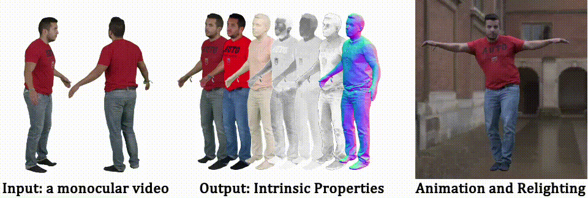
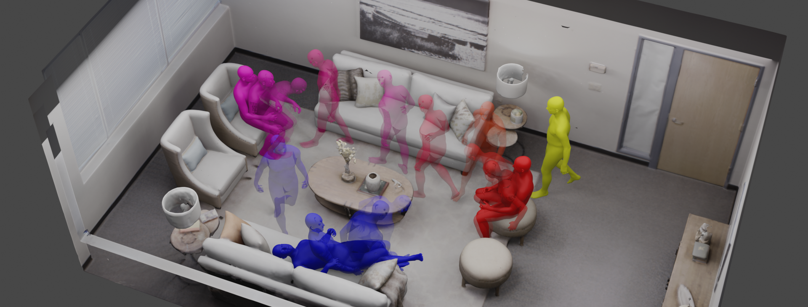
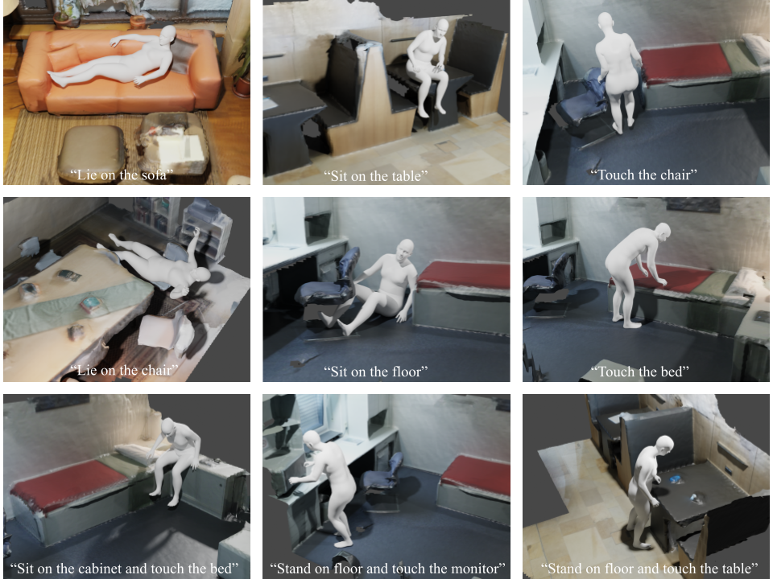
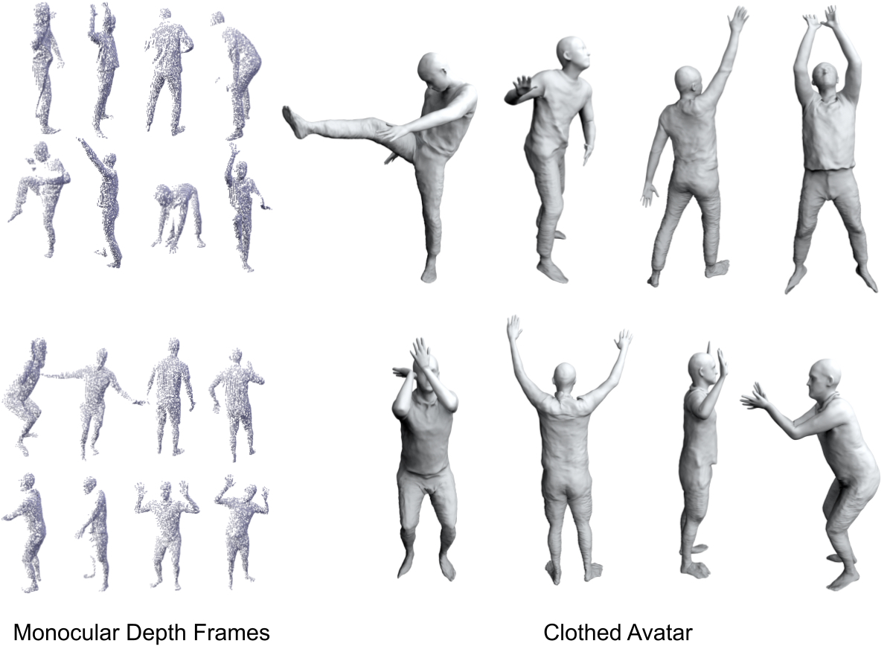
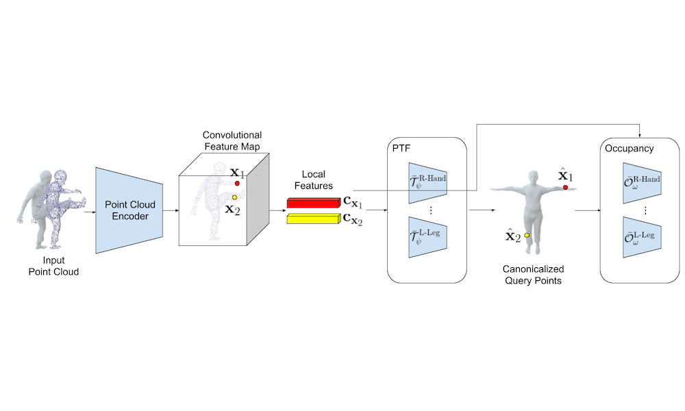
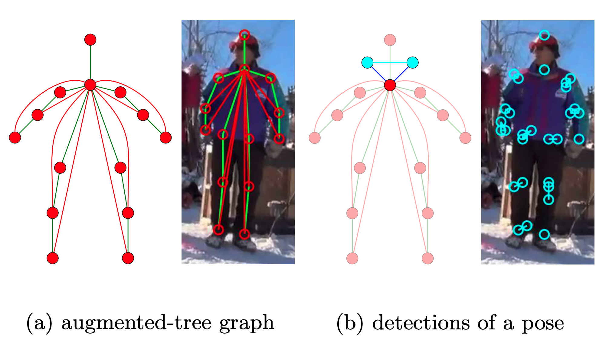
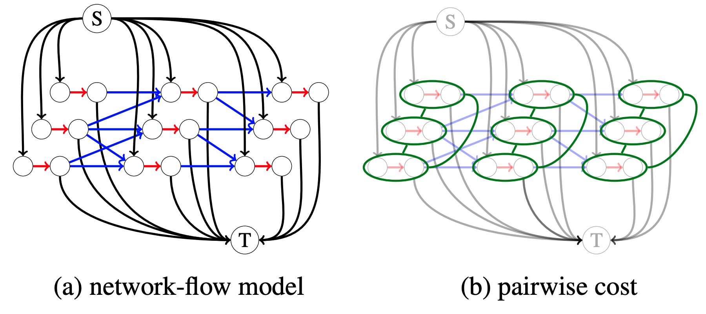
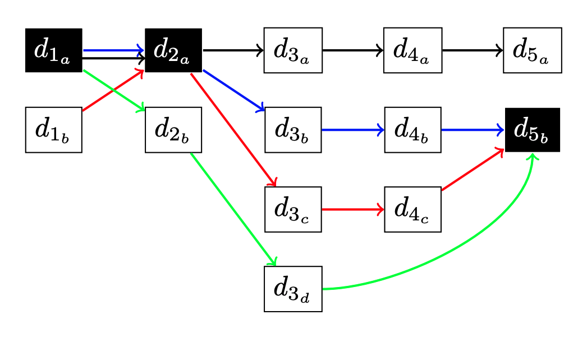
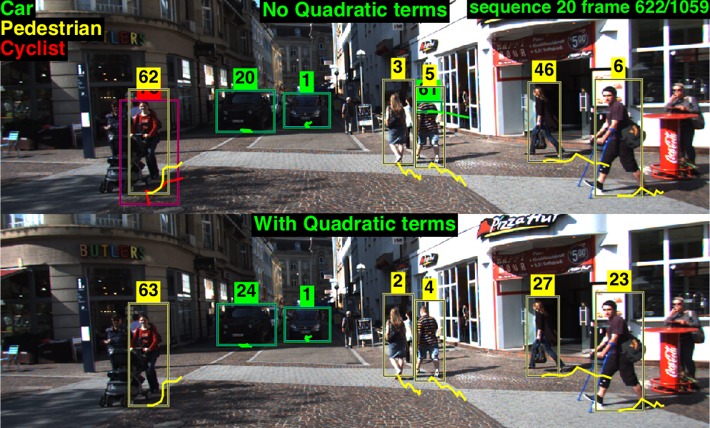

I am a PhD student at ETH Zurich , co-advised by Prof. Siyu Tang and Prof. Andreas Geiger. My research topic is computer vision, specifically in building controllable neural implicit representations for human bodies with clothes. I am also interested in differentiable combinatorial optimization and its application in computer vision. Before I came to ETH, I worked as a researcher in Kording Lab at University of Pennsylvania. Even before that, I worked as a senior system engineer at the autonomous driving group of Baidu. I got my Master's degree from University of California, Irvine under supervision of Prof. Charless Fowlkes
Shaofei Wang （王少飞）
Publications

IEEE Conf. on Computer Vision and Pattern Recognition (CVPR), 2024
Abstract
Project page
Paper
Code
Bibtex
We present IntrinsicAvatar, a novel approach to recovering the intrinsic properties of clothed human avatars including geometry, albedo, material, and environment lighting from only monocular videos. Recent advancements in human-based neural rendering have enabled high-quality geometry and appearance reconstruction of clothed humans from just monocular videos. However, these methods bake intrinsic properties such as albedo, material, and environment lighting into a single entangled neural representation. On the other hand, only a handful of works tackle the problem of estimating geometry and disentangled appearance properties of clothed humans from monocular videos. They usually achieve limited quality and disentanglement due to approximations of secondary shading effects via learned MLPs. In this work, we propose to model secondary shading effects explicitly via Monte-Carlo ray tracing. We model the rendering process of clothed humans as a volumetric scattering process, and combine ray tracing with body articulation. Our approach can recover high-quality geometry, albedo, material, and lighting properties of clothed humans from a single monocular video, without requiring supervised pre-training using ground truth materials. Furthermore, since we explicitly model the volumetric scattering process and ray tracing, our model naturally generalizes to novel poses, enabling animation of the reconstructed avatar in novel lighting conditions.
@inproceedings{Wang:CVPR:2024,
title = {IntrinsicAvatar: Physically Based Inverse Rendering of Dynamic Humans from Monocular Videos via Explicit Ray Tracing},
author = {Shaofei Wang and Bo\v{z}idar Anti\'{c} and Andreas Geiger and Siyu Tang},
booktitle = {IEEE Conf. on Computer Vision and Pattern Recognition (CVPR)},
year = {2024}
}
IEEE Conf. on Computer Vision and Pattern Recognition (CVPR), 2024
Abstract
Project page
Paper
Code
Bibtex
We introduce an approach that creates animatable human avatars from monocular videos using 3D Gaussian Splatting (3DGS). Existing methods based on neural radiance fields (NeRFs) achieve high-quality novel-view/novel-pose image synthesis but often require days of training, and are extremely slow at inference time. Recently, the community has explored fast grid structures for efficient training of clothed avatars. Albeit being extremely fast at training, these methods can barely achieve an interactive rendering frame rate with around 15 FPS. In this paper, we use 3D Gaussian Splatting and learn a non-rigid deformation network to reconstruct animatable clothed human avatars that can be trained within 30 minutes and rendered at real-time frame rates (50+ FPS). Given the explicit nature of our representation, we further introduce as-isometric-as-possible regularizations on both the Gaussian mean vectors and the covariance matrices, enhancing the generalization of our model on highly articulated unseen poses. Experimental results show that our method achieves comparable and even better performance compared to state-of-the-art approaches on animatable avatar creation from a monocular input, while being 400x and 250x faster in training and inference, respectively.
@inproceedings{Qian:2024:3DGSAvatar,
title={3DGS-Avatar: Animatable Avatars via Deformable 3D Gaussian Splatting},
author={Zhiyin Qian and Shaofei Wang and Marko Mihajlovic and Andreas Geiger and Siyu Tang},
booktitle={IEEE Conf. on Computer Vision and Pattern Recognition (CVPR)},
year={2024},
}

IEEE Conf. on Computer Vision and Pattern Recognition (CVPR), 2024
Abstract
Project page
Paper
Code
Bibtex
We introduce a morphable diffusion model to enable consistent controllable novel view synthesis of humans from a single image. Given a single input image and a morphable mesh with a desired facial expression, our method directly generates 3D consistent and photo-realistic images from novel viewpoints, which we could use to reconstruct a coarse 3D model using off-the-shelf neural surface reconstruction methods such as NeuS2.
@inproceedings{Chen:2024:Morphable,
title={Morphable Diffusion: 3D-Consistent Diffusion for Single-image Avatar Creation},
author={Xiyi Chen and Marko Mihajlovic and Shaofei Wang and Sergey Prokudin and Siyu Tang},
booktitle={IEEE Conference on Computer Vision and Pattern Recognition (CVPR)},
year={2024}
}

International Conference on Computer Vision (ICCV), 2023
Abstract
Project page
Paper
Code
Bibtex
Interaction with environments is one core ability of virtual humans and remains a challenging problem. We propose a method capable of generating a sequence of natural interaction events in real cluttered scenes. We formulate synthesizing human behaviors in 3D scenes as a Markov decision process with a latent action space, which is learned from motion capture datasets. We train scene interaction-aware and goal-driven agent policies to synthesize various human behaviors in indoor scenes including wandering in the room, sitting or lying on an object, and sequential combinations of these actions.
@inproceedings{Zhao:ICCV:2023,
title = {Synthesizing Diverse Human Motions in 3D Indoor Scenes},
author = {Zhao, Kaifeng and Zhang, Yan and Wang, Shaofei and Beeler, Thabo and and Tang, Siyu},
booktitle = {International conference on computer vision (ICCV)},
year = {2023}
}

European Conference on Computer Vision (ECCV), 2022
Abstract
Project page
Paper
Code
Bibtex
Combining human body models with differentiable rendering has recently enabled animatable avatars of clothed humans from sparse sets of multi-view RGB videos. While state-of-the-art approaches achieve a realistic appearance with neural radiance fields (NeRF), the inferred geometry often lacks detail due to missing geometric constraints. Further, animating avatars in out-of-distribution poses is not yet possible because the mapping from observation space to canonical space does not generalize faithfully to unseen poses. In this work, we address these shortcomings and propose a model to create animatable clothed human avatars with detailed geometry that generalize well to out-of-distribution poses. To achieve detailed geometry, we combine an articulated implicit surface representation with volume rendering. For generalization, we propose a novel joint root-finding algorithm for simultaneous ray-surface intersection search and correspondence search. Our algorithm enables efficient point sampling and accurate point canonicalization while generalizing well to unseen poses. We demonstrate that our proposed pipeline can generate clothed avatars with high-quality pose-dependent geometry and appearance from a sparse set of multi-view RGB videos. Our method achieves state-of-the-art performance on geometry and appearance reconstruction while creating animatable avatars that generalize well to out-of-distribution poses beyond the small number of training poses.
@inproceedings{ARAH:ECCV:2022,
title = {ARAH: Animatable Volume Rendering of Articulated Human SDFs},
author = {Shaofei Wang and Katja Schwarz and Andreas Geiger and Siyu Tang},
booktitle = {European Conference on Computer Vision (ECCV)},
year = {2022}
}

European Conference on Computer Vision (ECCV), 2022
Abstract
Project page
Paper
Code
Bibtex
Our goal is to synthesize humans interacting with a given 3D scene controlled by high-level semantic specifications as pairs of action categories and object instances, e.g., “sit on the chair”. The key challenge of incorporating interaction semantics into the generation framework is to learn a joint representation that effectively captures heterogeneous information, including human body articulation, 3D object geometry, and the intent of the interaction. To address this challenge, we design a novel transformer-based generative model, in which the articulated 3D human body surface points and 3D objects are jointly encoded in a unified latent space, and the semantics of the interaction between the human and objects are embedded via positional encoding. Furthermore, inspired by the compositional nature of interactions that humans can simultaneously interact with multiple objects, we define interaction semantics as the composition of varying numbers of atomic action-object pairs. Our proposed generative model can naturally incorporate varying numbers of atomic interactions, which enables synthesizing compositional human-scene interactions without requiring composite interaction data.
@inproceedings{Zhao:ECCV:2022,
title = {Compositional Human-Scene Interaction Synthesis with Semantic Control},
author = {Zhao, Kaifeng and Wang, Shaofei and Zhang, Yan and Beeler, Thabo and and Tang, Siyu},
booktitle = {European conference on computer vision (ECCV)},
month = oct,
year = {2022}
}

Neural Information Process Systems (NeurIPS), 2021
Abstract
Project page
Paper
Code
Bibtex
In this paper, we aim to create generalizable and controllable neural signed distance fields (SDFs) that represent clothed humans from monocular depth observations. Recent advances in deep learning, especially neural implicit representations, have enabled human shape reconstruction and controllable avatar generation from different sensor inputs. However, to generate realistic cloth deformations from novel input poses, watertight meshes or dense full-body scans are usually needed as inputs. Furthermore, due to the difficulty of effectively modeling pose-dependent cloth deformations for diverse body shapes and cloth types, existing approaches resort to per-subject/cloth-type optimization from scratch, which is computationally expensive. In contrast, we propose an approach that can quickly generate realistic clothed human avatars, represented as controllable neural SDFs, given only monocular depth images. We achieve this by using meta-learning to learn an initialization of a hypernetwork that predicts the parameters of neural SDFs. The hypernetwork is conditioned on human poses and represents a clothed neural avatar that deforms non-rigidly according to the input poses. Meanwhile, it is meta-learned to effectively incorporate priors of diverse body shapes and cloth types and thus can be much faster to fine-tune, compared to models trained from scratch. We qualitatively and quantitatively show that our approach outperforms state-of-the-art approaches that require complete meshes as inputs while our approach requires only depth frames as inputs and runs orders of magnitudes faster. Furthermore, we demonstrate that our meta-learned hypernetwork is very robust, being the first to generate avatars with realistic dynamic cloth deformations given as few as 8 monocular depth frames.
@inproceedings{MetaAvatar:NeurIPS:2021,
author = {Shaofei Wang and Marko Mihajlovic and Qianli Ma and Andreas Geiger and Siyu Tang},
title = {MetaAvatar: Learning Animatable Clothed Human Models from Few Depth Images},
booktitle = {Conference on Neural Information Processing Systems (NeurIPS)},
year = {2021}
}

IEEE Conf. on Computer Vision and Pattern Recognition (CVPR), 2021
Abstract
Project page
Paper
Code
Bibtex
Registering point clouds of dressed humans to parametric human models is a challenging task in computer vision. Traditional approaches often rely on heavily engineered pipelines that require accurate manual initialization of human poses and tedious post-processing. More recently, learning-based methods are proposed in hope to automate this process. We observe that pose initialization is key to accurate registration but existing methods often fail to provide accurate pose initialization. One major obstacle is that, despite recent effort on rotation representation learning in neural networks, regressing joint rotations from point clouds or images of humans is still very challenging. To this end, we propose novel piecewise transformation fields (PTF), a set of functions that learn 3D translation vectors to map any query point in posed space to its correspond position in rest-pose space. We combine PTF with multi-class occupancy networks, obtaining a novel learning-based framework that learns to simultaneously predict shape and per-point correspondences between the posed space and the canonical space for clothed human. Our key insight is that the translation vector for each query point can be effectively estimated using the point-aligned local features; consequently, rigid per bone transformations and joint rotations can be obtained efficiently via a least-square fitting given the estimated point correspondences, circumventing the challenging task of directly regressing joint rotations from neural networks. Furthermore, the proposed PTF facilitate canonicalized occupancy estimation, which greatly improves generalization capability and results in more accurate surface reconstruction with only half of the parameters compared with the state-of-the-art. Both qualitative and quantitative studies show that fitting parametric models with poses initialized by our network results in much better registration quality, especially for extreme poses.
@inproceedings{PTF:CVPR:2021,
author = {Shaofei Wang and Andreas Geiger and Siyu Tang},
title = {Locally Aware Piecewise Transformation Fields for 3D Human Mesh Registration},
booktitle = {IEEE Conf. on Computer Vision and Pattern Recognition (CVPR)},
year = {2021}
}
Accelerating Column Generation via Flexible Dual Optimal Inequalities with Application to Entity Resolution (Oral)
AAAI Conference on Artificial Intelligence (AAAI), 2020
Abstract
Paper
Code
Bibtex
In this paper, we introduce a new optimization approach to Entity Resolution. Traditional approaches tackle entity resolution with hierarchical clustering, which does not benefit from a formal optimization formulation. In contrast, we model entity resolution as correlation-clustering, which we treat as a weighted set-packing problem and write as an integer linear program (ILP). In this case sources in the input data correspond to elements and entities in output data correspond to sets/clusters. We tackle optimization of weighted set packing by relaxing integrality in our ILP formulation. The set of potential sets/clusters can not be explicitly enumerated, thus motivating optimization via column generation. In addition to the novel formulation, we also introduce new dual optimal inequalities (DOI), that we call flexible dual optimal inequalities, which tightly lower-bound dual variables during optimization and accelerate column generation. We apply our formulation to entity resolution (also called de-duplication of records), and achieve state-of-the-art accuracy on two popular benchmark datasets.
@inproceedings{EntityRes:AAAI:2020,
author = {Vishnu Suresh Lokhande, Shaofei Wang, Maneesh Singh, Julian Yarkony},
title = {Accelerating Column Generation via Flexible Dual Optimal Inequalities with Application to Entity Resolution},
booktitle = {AAAI Conference on Artificial Intelligence (AAAI)},
year = {2020}
}

European Conference on Computer Vision (ECCV), 2018
Abstract
Paper
Bibtex
We present a novel approach to solve dynamic programs (DP), which are frequent in computer vision, on tree-structured graphs with exponential node state space. Typical DP approaches have to enumerate the joint state space of two adjacent nodes on every edge of the tree to compute the optimal messages. Here we propose an algorithm based on Nested Benders Decomposition (NBD) which iteratively lower-bounds the message on every edge and promises to be far more efficient. We apply our NBD algorithm along with a novel Minimum Weight Set Packing (MWSP) formulation to a multi-person pose estimation problem. While our algorithm is provably optimal at termination it operates in linear time for practical DP problems, gaining up to 500x speed up over traditional DP algorithm which have polynomial complexity.
@inproceedings{Benders:ECCV:2018,
author = {Shaofei Wang, Alexander Ihler, Konrad Kording, Julian Yarkony},
title = {Accelerating Dynamic Programs via Nested Benders Decomposition with Application to Multi-person Pose Estimation},
booktitle = {European Conference on Computer Vision (ECCV)},
year = {2018}
}

International Journal of Computer Vision (IJCV), 2017
Abstract
Paper
Bibtex
We describe an end-to-end framework for learning parameters of min-cost flow multi-target tracking problem with quadratic trajectory interactions including suppression of overlapping tracks and contextual cues about cooccurrence of different objects. Our approach utilizes structured prediction with a tracking-specific loss function to learn the complete set of model parameters. In this learning framework, we evaluate two different approaches to finding an optimal set of tracks under a quadratic model objective, one based on an LP relaxation and the other based on novel greedy variants of dynamic programming that handle pairwise interactions. We find the greedy algorithms achieve almost equivalent accuracy to the LP relaxation while being up to 10x faster than a commercial LP solver. We evaluate trained models on three challenging benchmarks. Surprisingly, we find that with proper parameter learning, our simple data association model without explicit appearance/motion reasoning is able to achieve comparable or better accuracy than many state-of-the-art methods that use far more complex motion features or appearance affinity metric learning.
@article{learn_mot:IJCV:2017,
author = {Shaofei Wang, Charless C. Fowlkes},
title = {Learning Optimal Parameters for Multi-target Tracking with Contextual Interactions},
journal = {International Journal of Computer Vision (IJCV)},
volume = {122},
pages = {484–501},
year = {2017}
}

International Conference on Artificial Intelligence and Statistics (AISTATS), 2017
Abstract
Paper
Bibtex
We study the problem of multi-target tracking and data association in video. We formulate this in terms of selecting a subset of high-quality tracks subject to the constraint that no pair of selected tracks is associated with a common detection (of an object). This objective is equivalent to the classic NP-hard problem of finding a maximum-weight set packing (MWSP) where tracks correspond to sets and is made further difficult since the number of candidate tracks grows exponentially in the number of detections. We present a relaxation of this combinatorial problem that uses a column generation formulation where the pricing problem is solved via dynamic programming to efficiently explore the space of tracks. We employ row generation to tighten the bound in such a way as to preserve efficient inference in the pricing problem. We show the practical utility of this algorithm for pedestrian and particle tracking.
@inproceedings{dcg_mot:AISTATS:2017,
author = {Shaofei Wang, Steffen Wolf, Charless C. Fowlkes, Julian Yarkony},
title = {Tracking Objects with Higher Order Interactions via Delayed Column Generation},
journal = {International Conference on Artificial Intelligence and Statistics (AISTATS)},
year = {2017}
}

British Machine Vision Conference (BMVC), 2015
Abstract
Paper
Bibtex
We describe an end-to-end framework for learning parameters of min-cost flow multitarget tracking problem with quadratic trajectory interactions including suppression of overlapping tracks and contextual cues about co-occurrence of different objects. Our approach utilizes structured prediction with a tracking-specific loss function to learn the complete set of model parameters. Under our learning framework, we evaluate two different approaches to finding an optimal set of tracks under quadratic model objective based on an LP relaxation and a novel greedy extension to dynamic programming that handles pairwise interactions. We find the greedy algorithm achieves almost equivalent accuracy to the LP relaxation while being 2-7x faster than a commercial solver. We evaluate trained models on the challenging MOT and KITTI benchmarks. Surprisingly, we find that with proper parameter learning, our simple data-association model without explicit appearance/motion reasoning is able to outperform many state-of-the-art methods that use far more complex motion features and affinity metric learning.
@inproceedings{learn_mot:BMVC:2015,
author = {Shaofei Wang, Charless C. Fowlkes},
title = {Learning Optimal Parameters For Multi-target Tracking},
journal = {British Machine Vision Conference (BMVC)},
year = {2015}
}